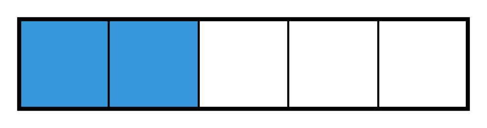
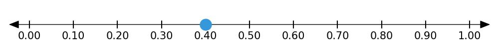
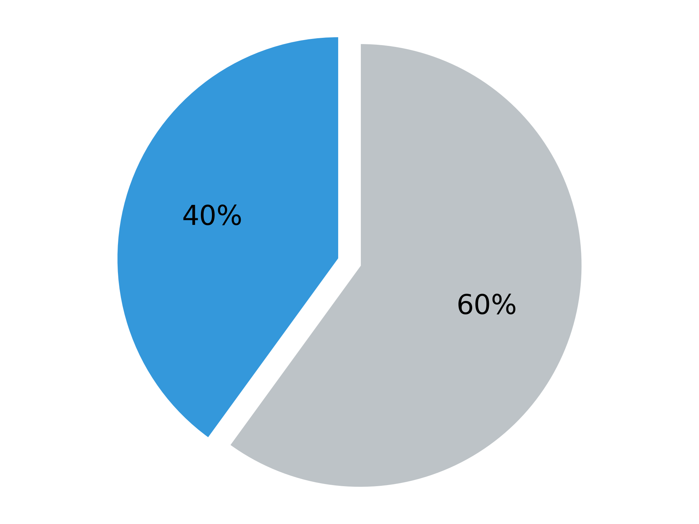
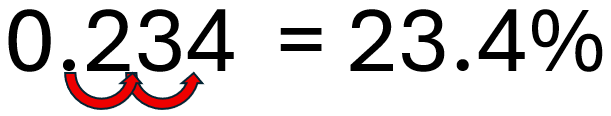
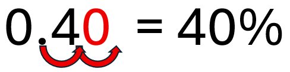
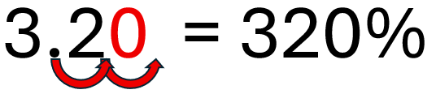
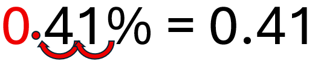
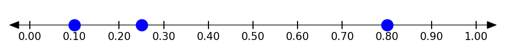

1.6 - Fractions, Decimals & Percents: Conversions
Fractions, decimals, and percents are just different ways of showing the same thing (a part of a whole). Whether you’re splitting a pizza, measuring a distance, or shopping during a sale, these numbers are everywhere.
In this lesson, you’ll learn how to move between these forms and understand how they relate to each other. This will be an important skill for solving many types of problems that involve parts of a whole.
🔥 Warm Up
Which one doesn’t belong?
- \(\frac{1}{2}\)
- 0.25
- 50%
- 0.5
(Explain your reasoning. There’s more than one right answer.)
Which two of these do you think are closest in value?
- \(\frac{2}{3}\)
- 70%
- 0.25
- \(\frac{3}{4}\)
👥 Learn Together
1.6.1 - What Are Fractions, Decimals, and Percents?
Fractions, decimals, and percents are all ways of showing a part of a whole.
A fraction shows how many parts out of a total. We often use them when:
- Measuring ingredients: “Add \(\frac{2}{3}\) of a cup of milk.”
- Position in a ranking: “She ranked 2 out of 350 or \(\frac{2}{350}\).”
- Splitting or sharing something: “We each got \(\frac{3}{8}\) of the pizza.”
A decimal uses place value and powers of 10. Decimals can be used for:
- Dealing with money: “This costs $4.75.”
- Measuring length or weight: “The board is 2.5 feet long.”
- Reporting data or averages: “The average was 3.6 stars.”
A percent means “per 100”. Percents are used when:
- Talking about sales or discounts: “It’s 20% off!”
- Describing test scores: “She got 95% on the quiz.”
- Comparing populations or change: “Unemployment dropped by 2%.”
We think about and visualize fractions, decimals, and percents differently too. Here is the same number shown in three different ways!



Fractions, decimals, and percents all show the same thing in different ways. You can change one form into another. Choose the form that fits the situation. In the next sections, you’ll learn how to switch between them.
1.6.2 - Converting Fractions to Decimals
Have you ever wondered why the division symbol (÷) looks the way it does? It has two dots separated by a bar because it represents a fraction! This is because fractions are just a different way to show division. To convert a fraction to a decimal, all we have to do is divide the numerator by the denominator.
Let’s try:
\[ \frac{3}{4} = 3 \div 4 = 0.75 \]
When we convert to a decimal, we will see that some decimals end, and some repeat forever.
| Fraction | Decimal |
|---|---|
| \(\frac{1}{4}\) | 0.25 |
| \(\frac{1}{3}\) | 0.333… |
| \(\frac{2}{3}\) | 0.666… |
| \(\frac{1}{5}\) | 0.2 |
If the decimal repeats, we write a bar over the repeating part: \(\frac{1}{3} = 0.\overline{3}\)
When you use a calculator to turn a fraction into a decimal, the result might look like it stops, but that can be misleading!
Some fractions have repeating decimals that go on forever, but calculators round or cut them off.
For example:
\(\frac{2}{3}\) really equals \(0.\overline{6}\) (0.6666…) but your calculator might show 0.6666666667
This can cause small errors if you’re not careful, especially when comparing values or converting back to fractions.
👉 Tip: If the decimal looks like it’s repeating (like 0.6666666667 or 0.14285714286…), it probably is!
After you simplify the fraction, look at the denominator. If it’s made only from 2s and/or 5s (like 2, 4, 5, 8, 10, 20), the decimal ends. If it has any other factor (like 3 or 7), the decimal repeats.
Example: Terminating Decimal
The fraction \(\frac{3}{10}\) has a denominator with factors 2 and 5. It ends and gives 0.3.
Example: Repeating Decimal
The fraction \(\frac{2}{6}\) has a denominator with factors 2 and 3. It repeats and gives \(0.\overline{3}\).
Using a calculator, we find that… \[ \frac{2}{5} = 2 \div 5 = 0.4 \]
1.6.3 - Converting Fractions and Decimals to Percents
Turning a decimal into a percent is easy. We simply move the decimal point to the right twice (the same as multiplying by 100) and then add a % sign.
Example 3: Convert 0.234 to a percent
To do this, we move the decimal two places to the right and then add a % sign. This gives us 23.4%.

But what if there isn’t a digit in the hundredths place? When we don’t have enough digits to the right of the decimal, we just fill them in with zeros.
Example 4: Convert 0.4 to a percent.

But what if the number is bigger than 1? When the number is bigger than 1.0, we do exactly the same thing and end up with a percentage that is larger than 100%!
Example 5: Convert 3.2 to a percent.

We multiply by 100 (move the decimal to the right twice) and add a % sign. This gives… \[1.342 \times 100 = 134.2\%\]
To convert a fraction to a percent, we first convert the fraction to a decimal.
Example 6: Convert \(\frac{3}{5}\) to a percent.
\[ \frac{3}{5} \Rightarrow 3 \div 5 = 0.6 \]
Now we convert the decimal to a percent.
\[0.6 \Rightarrow 60\%\]
First convert to a decimal: \[ \frac{2}{3} \Rightarrow 2 \div 3 = 0.\overline{6} \] Now convert to a percent: \[ 0.\overline{6} \Rightarrow 66.\overline{6}\% \]
1.6.4 Converting Decimals to Fractions
What if we want to go the other direction and convert a decimal to a fraction? The key to doing this is understanding place value.
Suppose we have the number 123.456. The following table shows the place value for each digit.
| Place | Value | Explanation |
|---|---|---|
| Hundreds | 1 | 1 hundred = 100 |
| Tens | 2 | 2 tens = 20 |
| Ones | 3 | 3 ones = 3 |
| Decimal Point | . | Separates whole from part |
| Tenths | 4 | 4 tenths = \(\frac{4}{10}\) |
| Hundredths | 5 | 5 hundredths = \(\frac{5}{100}\) |
| Thousandths | 6 | 6 thousandths = \(\frac{6}{1000}\) |
Place value helps us say the number differently. Instead of saying “123 point 456” we could say “123 and 456 thousandths”. This is the trick to converting decimals to fractions.
Example 1: Converting a Decimal to a Fraction
Say we want to convert 0.75 to a fraction. We could say this is “zero point seven five” but it is more useful to say this is “75 hundredths”. This gives us our fraction!
\[ 0.75 = \text{75 hundredths} \Rightarrow \frac{75}{100} = \frac{3}{4} \]
Example 2: Converting a Decimal to a Fraction
Let’s convert 0.1 into a fraction.
\[ 0.1 = \text{1 tenth} \Rightarrow \frac{1}{10} \]
What if we have a number bigger than one?
If the number is bigger than one (like we saw with 4.23) we do the same thing, but we end up with a mixed number.
\[ 4.23 = \text{4 and 23 hundredths} \Rightarrow 4\dfrac{23}{100} \]
If you struggle with words like “hundredths” here is another way to think about it. To convert a decimal to a fraction, count the number of digits to the right of the decimal. You will divide by 1 with that many zeros after it.
Example: 0.5431
There are 4 digits to the right of the decimal point and so we divide by 1 with 4 zeros: \[ 0.5431 = \frac{5431}{10000} \]
\[ 0.51 = \text{51 hundredths} \Rightarrow \frac{51}{100} \]
1.6.5 - Converting Percents to Decimals and Fractions
To convert a percent to a decimal simply move the decimal two places left (the same as dividing by 100).
For example, here is what it looks like to convert 41% to a decimal. Notice that we sometimes have to add zeros to the left so the decimal has a place to go. Also notice that if there is no decimal, we put it just after the number before moving to the left.

Here are some more examples:
3.4% → 0.034
75% → 0.75
251% → 2.51
0.2% → 0.002
We move the decimal to the left twice and remove the % sign. This gives… \[ 35\% = 0.35 \]
To write a percent as a fraction, first convert to a decimal and then convert to a fraction, simplifying if possible:
3.4% → 0.034 → \(\frac{34}{1000}\) → \(\frac{17}{500}\)
75% → 0.75 → \(\frac{75}{100}\) → \(\frac{3}{4}\)
251% → 2.51 → \(\frac{251}{100}\)
0.2% → 0.002 → \(\frac{2}{1000}\) → \(\frac{1}{500}\)
First, convert to a decimal and then to a fraction. \[ 35\% = 0.35 \Rightarrow \text{35 hundredths} \Rightarrow \frac{35}{100} = \frac{7}{20} \]
1.6.6 - Bringing It All Together
Now that you’ve seen how to convert between fractions, decimals, and percents, here’s a summary table to help you remember the steps:
| From | To | How to Convert |
|---|---|---|
| Fraction | Decimal | Divide the numerator by the denominator |
| Fraction | Percent | First convert to a decimal then convert to a percent |
| Decimal | Fraction | Use place value (write the fraction as you would say it) |
| Decimal | Percent | Move the decimal two places right and add % sign |
| Percent | Decimal | Move the decimal two places left and remove % sign |
| Percent | Fraction | First convert to a decimal and then convert to a fraction |
Some conversions are so common that it helps to memorize them. These are called benchmark values:
| Fraction | Decimal | Percent |
|---|---|---|
| \(\frac{1}{2}\) | 0.5 | 50% |
| \(\frac{1}{4}\) | 0.25 | 25% |
| \(\frac{3}{4}\) | 0.75 | 75% |
| \(\frac{1}{3}\) | 0.333… | 33.3…% |
| \(\frac{1}{5}\) | 0.2 | 20% |
| \(\frac{1}{8}\) | 0.125 | 12.5% |
| \(\frac{1}{9}\) | 0.111… | 11.1% |
| \(\frac{1}{10}\) | 0.1 | 10% |
✍️ Practice On Your Own
Conversions Practice
Convert each fraction to a decimal:
- \(\frac{1}{2}\)
- \(\frac{3}{5}\)
- \(\frac{3}{4}\)
- \(\frac{1}{8}\)
- \(\frac{2}{3}\)
- \(2\tfrac{2}{9}\)
Convert each decimal to a percent:
- 0.42
- 0.1
- 0.125
- 0.01
- 0.005
- 5.03
Convert each percent to a decimal:
- 15%
- 30%
- 0.5%
- 66%
- 3.5%
- 132%
Convert each percent to a fraction (in simplest form):
- 50%
- 25%
- 80%
- 12.5%
- 0.5%
- 275%
Comparison Questions
Show the following numbers on the same number line
- 0.25
- \(\frac{4}{5}\)
- 10%
Which is greatest? (Explain how you know.)
- 0.65
- 65%
- \(\frac{2}{3}\)
- \(\frac{13}{20}\)
A test has 100 points. Which student did the best?
- Kai scored \(\frac{4}{5}\) of the points
- Aaliyah scored 78%
- Zoe scored 0.76
Challenge Problems
Which is closest to \(\frac{3}{4}\) (show your reasoning)?
- 70%
- 0.72
- \(\frac{4}{5}\)
- 0.68
A science quiz has 20 questions. Three students earned the following scores:
- Emily got 15 correct
- Omar got 75% correct
- Jalen got \(\frac{14}{20}\) correct
Who had the highest score and who had the lowest?
Warm-Up
Answers vary
Example: 0.25 because all of the rest are equal to each other.
b and d are closest
Conversions Practice
- 0.5
- 0.6
- 0.75
- 0.125
- \(0.\overline{6}\)
- \(2.\overline{2}\)
- 42%
- 10%
- 12.5%
- 1%
- 0.5%
- 503%
- 0.15
- 0.3
- 0.005
- 0.66
- 0.035
- 1.32
- \(\frac{1}{2}\)
- \(\frac{1}{4}\)
- \(\frac{4}{5}\)
- \(\frac{1}{8}\)
- \(\frac{1}{200}\)
- \(2\tfrac{3}{4}\)
Comparison Questions

\(\frac{2}{3}\) is greatest because it equals \(0.\overline{6}\) all of the others are equal to 0.65.
Kai because he scored 80% and the others scored 78% and 76%.